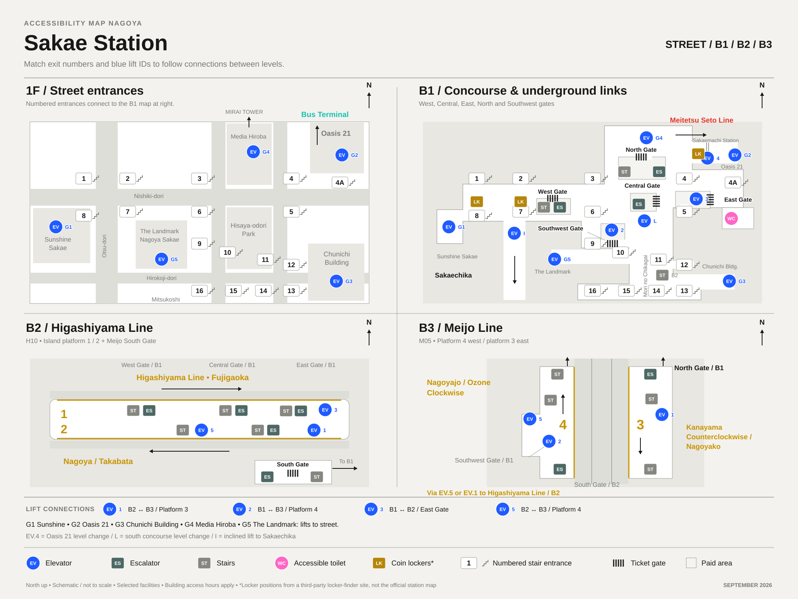
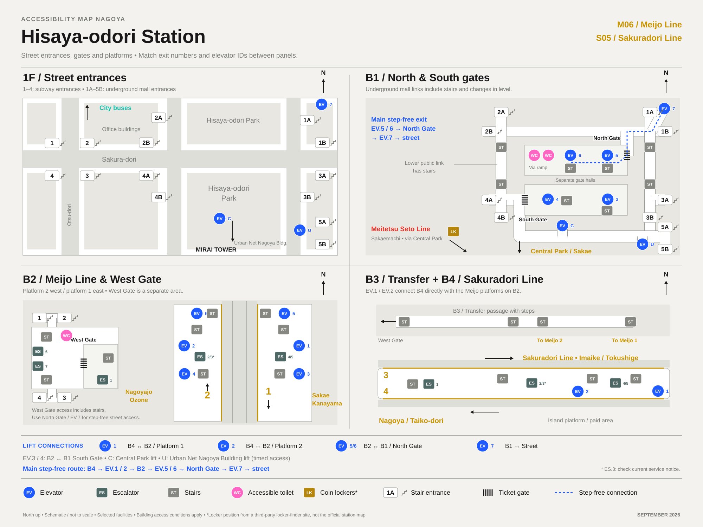
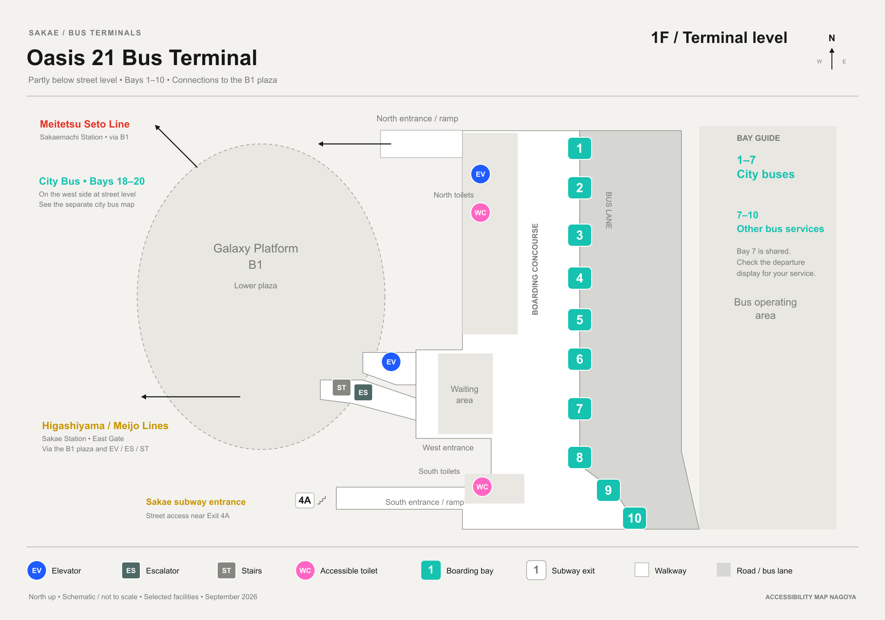
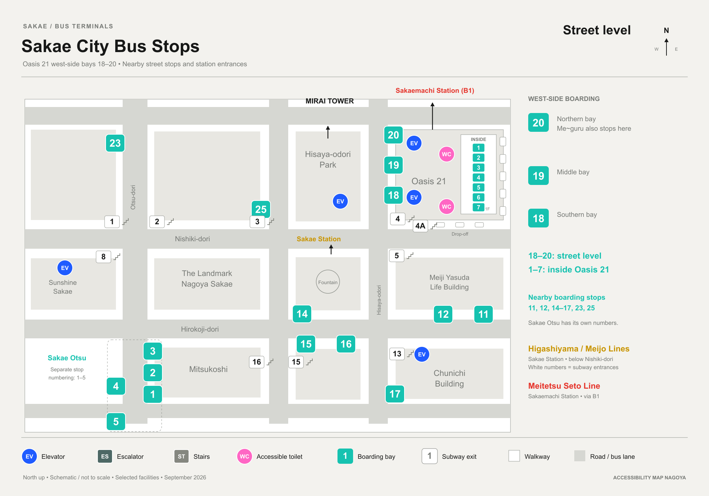
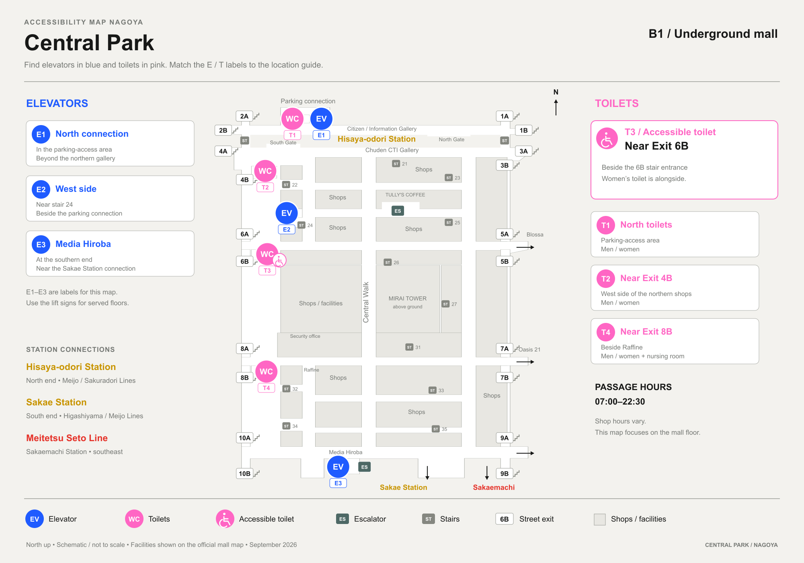
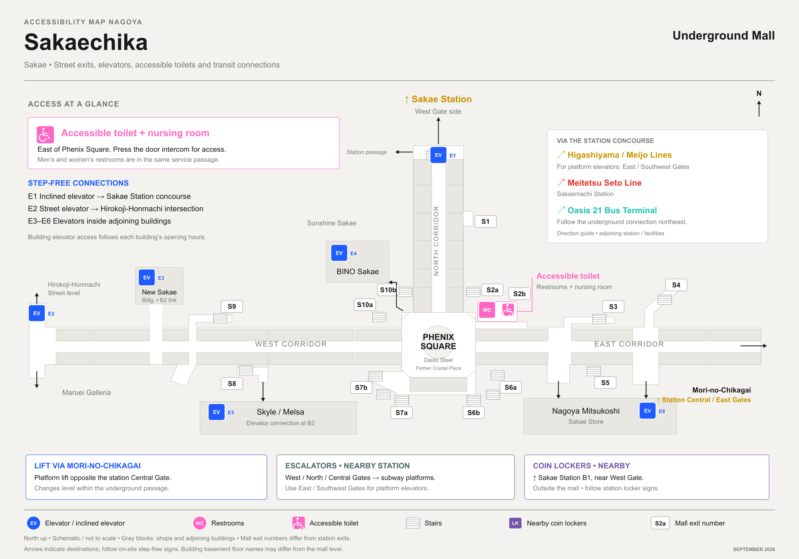

Sakae /Hisaya-odori
Sakae & Hisaya-odori Stations, Oasis 21, the bus terminals and the underground malls — without steps.
Is Sakae Station wheelchair accessible? Yes — both Sakae and Hisaya-odori Stations have step-free routes and elevators, and accessible toilets are available at the stations, Oasis 21 and the Central Park underground street. Wheelchair users, travelers with strollers or heavy luggage, and anyone with limited mobility can all use the same step-free routes between the two stations, Oasis 21 and the underground malls.
Traveling with luggage or a stroller? Street-level elevators reach Sakae Station through nearby buildings — Oasis 21, the Chunichi Building, Media Hiroba and The Landmark Nagoya Sakae — and Hisaya-odori Station’s EV.7 runs directly from the North Gate to street level. More elevators connect the Central Park and Sakaechika underground malls to surrounding buildings, and accessible toilets are available at the Oasis 21 bus terminal.
Choose a section
Pick a section
Station
Sakae Station · Higashiyama & Meijo lines
Elevators & access
EV.4 is the concourse-level change up toward Oasis 21. To reach street level itself, the building ground lifts are the step-free route: G1 (Sunshine Sakae), G2 (Oasis 21), G3 (Chunichi Building), G4 (Media Hiroba) and G5 (The Landmark Nagoya Sakae) — each pairs a spot on the concourse with a specific building’s own lift, not a subway elevator. Published hours: Oasis 21 6am–11pm, Chunichi Building 5:15am–midnight, Media Hiroba 5:30am–11:30pm, The Landmark 5:30am–midnight.
Toilets
The accessible toilet is outside the East Gate on B1, with an ostomate fitting.
Coin lockers
Reported near West Gate (Exits 1 & 2) and the Meitetsu Sakaemachi Station gate, per a third-party locker-finder site.
Hisaya-odori Station · Sakuradori & Meijo lines
Elevators & access
The primary step-free route is EV.7, from the North Gate’s public side up to street level. Two more building lifts also reach the surface on timed access: C (Central Park) and U (Urban Net Nagoya Building). West Gate is not reachable by elevator from either line’s platforms — it depends on stairs.
Sourced from Nagoya City Transportation Bureau’s platform and gate accessibility guides for Hisaya-odori Station. We haven’t independently timed or photographed these routes yet.
Toilets
Three more toilets: two inside the North Gate (approached via a ramp) and one outside the West Gate.
Coin lockers
Reported straight ahead then right of South Gate, per a third-party locker-finder site.
Concourse maps
Sakae Station · street / B1 / B2 / B3
Street entrances (1F) · concourse (B1) · Higashiyama Line (B2) · Meijo Line (B3) · north up on every panel · swipe to see all four

Simplified schematic, not the official floor plan — wall and gate positions are approximate. G1–G5, L and I are this map’s own IDs for building ground lifts and level changes, not official station equipment numbers.
Hisaya-odori Station · street / B1 / B2 / B3–B4
Street entrances (1F) · B1 North & South gates · B2 Meijo platforms & West Gate · B3–B4 Sakuradori transfer · north up on every panel · swipe to see all four

Simplified schematic, not the official floor plan — wall and gate positions are approximate. C and U are this map’s own IDs for building ground lifts, not official station equipment numbers. West Gate is not reachable by elevator from either line’s platforms.
Bus
Oasis 21 Bus Terminal
Bays 1–10, reached step-free from Sakae Station’s concourse by ground lift G2 (published hours 6am–11pm). Two accessible toilets are on the boarding level — one near the north entrance/ramp, one near the south entrance.
Sakae City Bus Stops
West-side bays 18–20, Oasis 21’s own indoor bays 1–7, and nearby street stops are all part of Sakae’s city bus network.
Sakae Otsu stops use a separate numbering from the main Sakae stops. Sourced from Nagoya City Transportation Bureau’s official station and bus-stop diagrams, Oasis 21’s floor guide, and Maruhachi Kotsu’s terminal guide.
Oasis 21 Bus Terminal · 1F terminal level
Boarding bays 1–10 · partly below street level · connects to the B1 plaza · swipe to see all

Sakae City Bus Stops · street level
West-side bays 18–20 · Oasis 21 indoor bays 1–7 · nearby street stops · swipe to see all

Simplified schematics, not surveyed plans — boarding bay positions are approximate. Sakae Otsu stops use separate numbering from the main Sakae stops. Sourced from Nagoya City Transportation Bureau’s official station and bus-stop diagrams, Oasis 21’s floor guide, and Maruhachi Kotsu’s terminal guide.
Nearby facilities
Oasis 21
Reached from Sakae Station’s concourse by ground lift G2, published open 6am–11pm — the same step-free route used for the bus terminal above.
Nearby department stores
Matsuzakaya Nagoya, Mitsukoshi Nagoya Sakae, Sunshine Sakae, the Chunichi Building and The Landmark Nagoya Sakae are all a short walk from the station and open customer toilets during business hours.
Multi-purpose toilet floor and exact accessibility details for each store are not yet personally verified — check the store’s own floor guide, or use the station or Oasis 21 accessible toilets above if step-free access matters.
Public toilet outside
Sakae Funsui-nishi Public Toilet, in Nishiki 3-chome, is the closest independent public toilet — about 54m from the station.
Wheelchair access for this specific toilet is not confirmed in the city’s public-toilet open data. If step-free access matters, the station or Oasis 21 toilets above are the safer bet.
Underground Streets
Central Park · underground mall linking Hisaya-odori and Sakae Stations
Elevators
Three lifts are shown on the official floor map: E1 at the north parking-access area (beyond the Citizen/Information Gallery), E2 on the west side near internal stair 24 and the parking connection, and E3 at Media Hiroba, near the southern Sakae Station connection.
Served floors are not confirmed by the official map — E1 and E2 must not be assumed to reach the street directly. E1–E3 are this map’s own labels, not official numbers.
Toilets
Four toilet groups: T1 at the north parking-access area, T2 near Exit 4B, T3 (accessible toilet plus women’s toilet) near Exit 6B, and T4 near Exit 8B beside Raffine, which also has a nursing room.
Only T3 carries the accessible-toilet symbol on the official mall map.
Coin lockers
No coin lockers were found inside Central Park, on its official floor map or facilities page. The nearest confirmed lockers are at Hisaya-odori Station’s South Gate, covered above under Hisaya-odori Station.
This does not confirm there are no lockers inside Central Park, only that none was found on official sources.
Central Park · B1 · elevators in blue, toilets in pink · north up · swipe to see the whole mall

Simplified schematic, not the official floor plan — positions are approximate. E1–E3 and T1–T4 are this map’s own reference labels; exit numbers 1A–10B are Central Park’s official exit IDs. Public-passage hours are 07:00–22:30; store and parking hours differ. Sourced from Central Park’s official floor map, facilities page and FAQ, checked 11 September 2026.
Sakaechika · underground mall beneath Sakae, linking Sakae Station, Oasis 21 and the Meitetsu Seto Line
Elevators
An inclined elevator (E1) connects Sakaechika directly to the Sakae Station concourse. A street elevator (E2) surfaces near the Hirokoji-Honmachi intersection. Four more lifts reach the mall through adjoining buildings, each at that building’s own B2 level: New Sakae Building (E3), BINO Sakae (E4), Skyle/Melsa (E5) and Nagoya Mitsukoshi Sakae (E6).
Building elevator access follows each building’s own opening hours. E1–E6 are this map’s own reference labels, not official equipment numbers.
Toilets
One accessible toilet and nursing room, east of Phenix Square — the doors use an intercom for access. Men’s and women’s restrooms are in the same service passage.
No other accessible-toilet symbol appears on the official mall map.
Coin lockers
No coin lockers were confirmed inside Sakaechika. A third-party locker-finder site reports lockers near Sakae Station’s West Gate on B1 — the same bank already covered under Sakae Station, above.
That listing is dated 15 May 2025 and does not establish current capacity or availability. This does not confirm there are no lockers inside Sakaechika, only that none was found on official sources.
Sakaechika · concourse level · elevators in blue, toilet in pink · north up · swipe to see the whole mall

Simplified schematic, not the official floor plan — shop blocks are simplified and exit numbers (S1–S10b) are Sakaechika’s own mall exit IDs, separate from subway exit numbers. A platform lift opposite the station’s Central Gate and escalators from the West/North/Central Gates to the platforms are off-map callouts, as are the nearby coin lockers. Sourced from Sakaechika’s official floor map, barrier-free guide and access guide, cross-checked 13 September 2026.
See the full Underground Streets page for ESCA and Unimall, mapped near Nagoya Station.